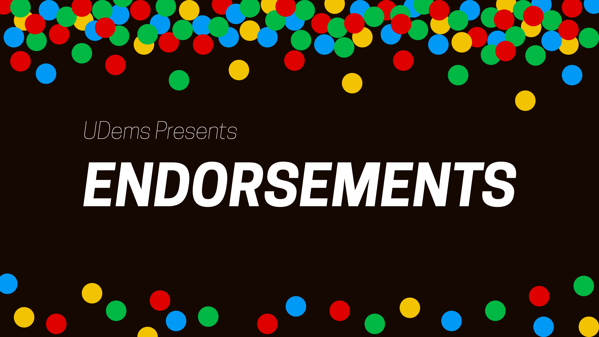

University Democrats Endorsements for the Fall 2018 City Elections. Developed for Facebook and Twitter distribution during my Communications Director term. Made with Adobe Illustrator.
Law Offices of Karen Ditsch Text Logo developed for Facebook, later utilized as part of a Facebook cover photo. Fall 2018. Made with Adobe Illustrator.

Facebook event cover photo for a University Democrats social. Fall 2018. Made with Adobe Illustrator.

Facebook event cover photo for a University Democrats endorsement meeting. Fall 2018. Made with Adobe Illustrator.